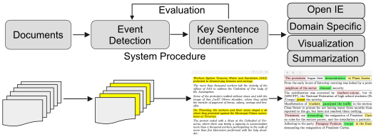

Societal Event Detection and Forecasting in Large-scale Media

Using open source datasets, we study and develop machine learning approaches that jointly tackle the problem of identifying evidence-based precursors and forecasting events into the future.
-
Learning Dynamic Context Graphs for Predicting Social Events.
Songgaojun Deng, Huzefa Rangwala, Yue Ning.
In Proceedings of the 25th ACM SIGKDD Conference on Knowledge Discovery and Data Mining (KDD'19).
[ pdf | bibtex | code ] -
When do Crowds turn Violent? Uncovering Triggers from Media.
Yue Ning, Sathappan Muthiah, Huzefa Rangwala, David Mares and Naren Ramakrishnan.
In Proceedings of the 2018 IEEE/ACM International Conference on Advances in Social Networks Analysis and Mining (ASONAM'18).
[ pdf | bibtex ] -
STAPLE: Spatio-Temporal Precursor Learning for Event Forecasting.
Yue Ning, Rongrong Tao, Chandan K. Reddy, Huzefa Rangwala, James C. Starz, Naren Ramakrishnan.
In Proceedings of the 18th SIAM International Conference on Data Mining (SDM’18).
[ pdf | poster | bibtex ] -
Modeling Precursors for Event Forecasting via Nested Multi-Instance Learning.
Yue Ning, Sathappan Muthiah, Huzefa Rangwala, Naren Ramakrishnan.
In Proceedings of the 22nd ACM SIGKDD Conference on Knowledge Discovery and Data Mining (KDD’16).
[ pdf | video | poster | bibtex ]

We investigate multi-instance learning and deep learning models to extract key event-relevant sentences for event detection.
A Multiple Instance Learning Framework for Identifying Key Sentences and Detecting Events.
Wei Wang, Yue Ning, Huzefa Rangwala, Naren Ramakrishnan.
In Proceedings of the 25th ACM International Conference on Information and Knowledge Management (CIKM’16).
[ pdf | bibtex ]